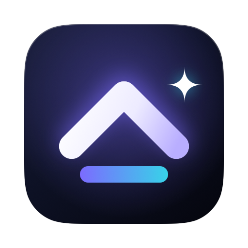
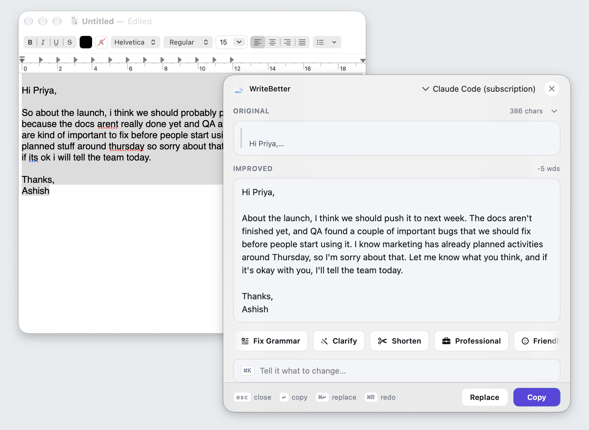
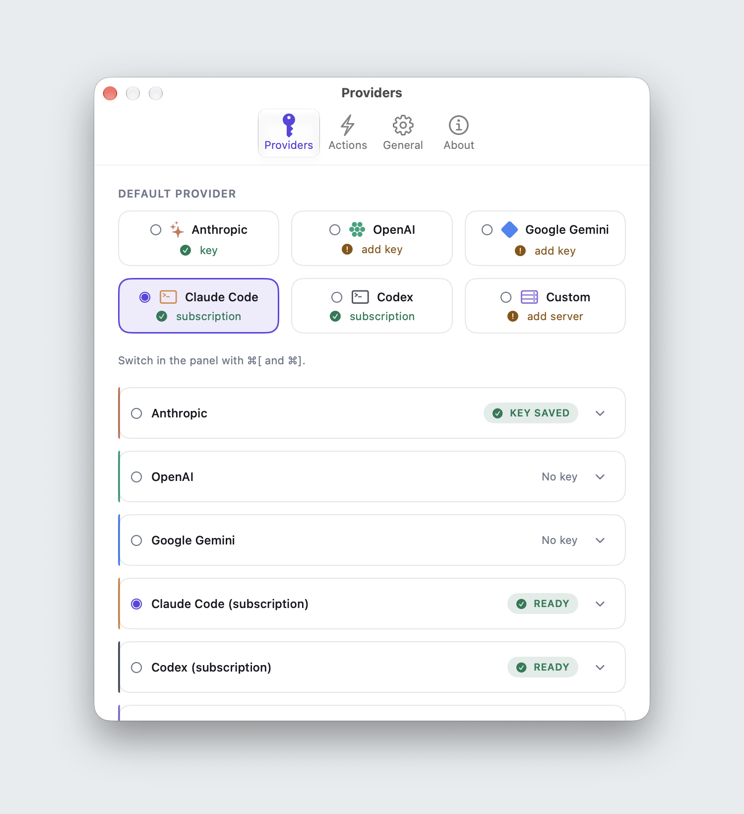

Free · open source · macOS 14+
Rewrite anything. Right where you wrote it.
Copy some text, or just select it, and press ⇧⌘Space. A floating panel streams a better version from the model you choose. ↩ copies it; ⌘↩ puts it back where it came from.

- No account
- No server
- No telemetry in the app
- Keys in your Keychain
- MIT licensed
How it works
Three keys. No window to manage.
-
⌘C
Copy, or just select
WriteBetter reads what you copied. Turn on Accessibility and it picks up your selection on its own.
-
⇧⌘Space
Summon the panel
It floats over the app you're in and streams the rewrite as it's written.
-
↩⌘↩esc
Keep it, or don't
Copy the result, replace the original in place, or cancel. You're back where you were.
Actions
Five quick actions, a prompt, and your own.
- ⌘1
- Fix Grammar
- ⌘2
- Clarify
- ⌘3
- Shorten
- ⌘4
- Professional
- ⌘5
- Friendly
- ⌘K
- Your own prompt
Say what you want in plain words.
- ⌘6–⌘9
- Saved actionsNew
Keep the prompts you reuse on a key of their own.
I just wanted to reach out and follow up on the email I sent last week, to see whether we might be able to find some time to meet at some point next week.
Following up on last week's email: could we meet next week?
Models
Your key, or no key at all.
Seven providers. Pick one in Settings, then switch between them from the panel.
-
Claude, GPT and Gemini
Paste your own Anthropic, OpenAI or Google key. It's kept in the macOS Keychain, and the provider bills you directly.
-
Any OpenAI-compatible endpointNew
Ollama, LM Studio, OpenRouter, or your own server. Point it at a model on your Mac and nothing leaves it.
-
Claude Code and Codex CLINew
Already logged in to
claudeorcodex? Rewrites run through it and bill to that subscription. No API key. Each rewrite arrives in one piece, not streamed, and runs with tools off at low effort by default. -
Apple's on-device modelNew
On macOS 26 with Apple Silicon: free, offline, and no key to set up.

How it's built
A small native app. One hop to the model.
Pure Swift and SwiftUI, no web view, no backend. Your text takes one of three routes.
-
A
HTTPS to a provider
Anthropic, OpenAI, Gemini or your own OpenAI-compatible endpoint. The reply streams back token by token, using your key from the Keychain.
-
B
Your logged-in CLI
The app runs
claudeorcodexonce per rewrite, in a throwaway folder, tools off, no session saved. The prompt goes in, the answer comes back. -
C
Apple's on-device model
Handled by macOS itself. Nothing leaves the Mac.
Read every line on GitHub. Questions or ideas? Get in touch.
Privacy
Your text goes to one place. The model you picked.
-
No server, no account
There's no WriteBetter backend. The app talks to your provider directly.
-
Keys stay in the Keychain
Stored by macOS, not in a settings file.
-
No telemetry in the app
The app sends no analytics and no usage data. This web page does count visits.
-
Permissions only if you want them
Copying needs none. Accessibility is optional, for selection capture and replace in place.
Install
Download, drag, open.
-
01
Download the DMG
One download for Apple Silicon and Intel Macs on macOS 14 or later.
-
02
Drag to Applications
Open the disk image and drag WriteBetter into Applications.
-
03
Open it
The caret appears in your menu bar. There's no Dock icon.
-
04
Pick a model
Click the caret, choose Settings, and add a key, a local endpoint, Apple's model, or your Claude Code or Codex login.
Or use Homebrew
Either way, updates arrive inside the app.
$ brew install --cask ashishjain608/tap/writebetter
FAQ
Before you download.
Is WriteBetter free?
Yes. It's MIT-licensed open source, with no paid tier and no account. A cloud provider bills you for what you use on your own key. Local models and Apple's on-device model cost nothing, and the Claude Code and Codex CLI providers use the subscription you already pay for.
How is it different from Apple's Writing Tools?
Writing Tools is free and built in, but it needs Apple Intelligence: an M1 or later Mac, in a supported region and language, and you can't bring your own model. WriteBetter runs on macOS 14 and later, Intel Macs included, lets you pick any frontier or local model, and lets you save your own actions.
Where does my text go?
Only to the provider you pick. There's no WriteBetter server, and the app has no telemetry. With a local model or Apple's on-device model, your text stays on your Mac. With the Claude Code or Codex CLI provider, it goes where that CLI sends it.
What permissions does it need?
None to start: it reads what you copy. Turn on Accessibility if you want it to pick up your selection without ⌘C, or to replace text in place with ⌘↩.
Which Macs does it run on?
Any Mac on macOS 14 or later, Apple Silicon or Intel. Apple's on-device model needs macOS 26 on Apple Silicon, with Apple Intelligence turned on.
Better writing, one shortcut away.
Free, open source, and your text goes only where you send it.
Build it yourself
Native Swift. Clone it, open the Xcode project, press ⌘R.
$ git clone https://github.com/Ashishjain608/write-better.git $ open write-better/WriteBetter/WriteBetter.xcodeproj